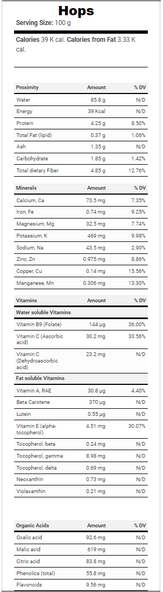

Wiki-Plant
Hops
Women Health, Sleep
Hops
 Additional InfoCommon name: Hops.
Scientific plant name: Humulus lupulus L.
Origin: The first documented hop cultivation was in 736, in the Hallertau region of present-day Germany.
Harvest season: Harvesting occurs between mid-August and September when the cones have had enough time to dry out on the vine. Hops are light and dry when picked, springing back after a squeeze. They are processed and dried immediately after harvesting. The Hops are stored in airtight conditions until they’re ready for extraction. The resins, triterpenes, flavonoids, and bitter acids are extracted and concentrated.
Production: The three largest producers in the
world are the United States, Germany, and China, with quantities
ranging from 75 to +110 Million Lb per year.
Source:
https://beermaverick.com/between-the-35th-and-55th-parallels-worlds-hop-production/
Health benefits: Hops constituents, such as prenylated flavonoids, xanthohumol, and bitter acids, are believed o affect mental stress, insomnia, and anxiety. In addition, it relieves menopausal symptoms like hot flashes, night sweats, weight gain, irritability, and sleep problems.
History of plant usage and discovery: The first mention of hops in brewing in that country was in 1079. Nevertheless, in the will of Charlemagne’s father (Pepin the Short), hop gardens were left to the Cloister of Saint-Denis in 768. In the 13th century, hops began threatening the use of gruit for flavoring due to the increased taxation on the latter. In the following years, political, financial, and religious motives directed the use of hops in one direction or the other in different areas of Europe and the Americas.